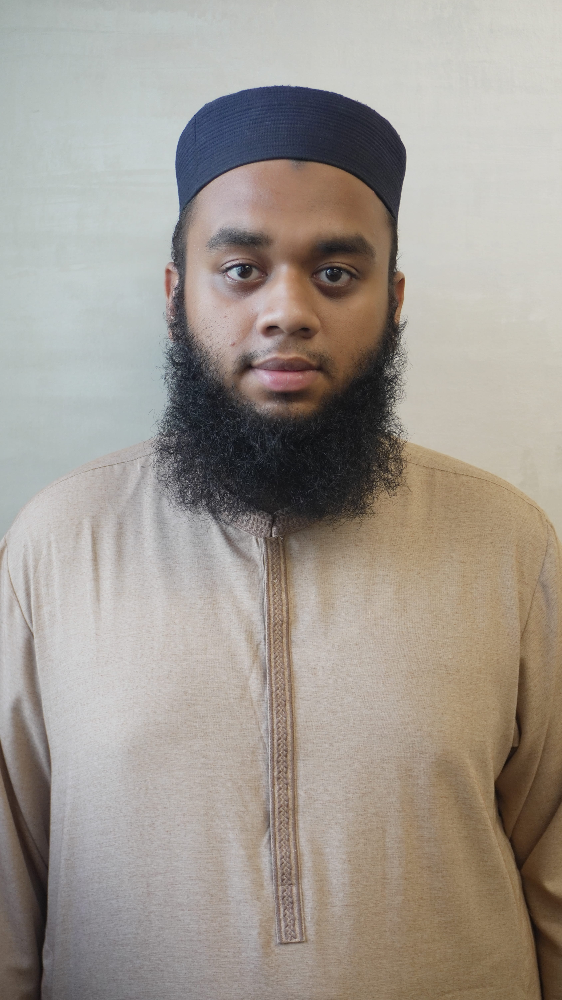

Medical imaging
Computer vision for clinical images
I work with methods for detection, segmentation, and classification in medical images, including YOLOv11, Vision Transformers, and Swin Transformers.
Medical AI Researcher · Karachi, Pakistan
I work on medical AI, with a focus on medical imaging, multimodal learning, and longitudinal clinical data. I build and evaluate machine-learning workflows, contribute to research, and share what I learn through writing.

I explore how computer vision and clinical data can support research in medical imaging and patient care.
Medical imaging
Computer vision for clinical images
I work with methods for detection, segmentation, and classification in medical images, including YOLOv11, Vision Transformers, and Swin Transformers.
Multimodal learning
Combining images with clinical context
I am interested in combining medical images with clinical history and reports, and in studying how multimodal methods transfer across fields such as clinical AI and autonomous driving.
Longitudinal AI
Studying change over time
I work with repeated measurements and wound images to study patient progression and support research into long-term prognosis.
Radiomics
Radiomic features for outcome research
I extract handcrafted and learned features from radiological scans for machine-learning studies in survival prediction and tumor analysis.
A selection of work in diabetic foot care, medical image analysis, and applied computer vision.
At Indus Hospital, I lead three junior ML engineers in research on diabetic foot ulcer prognosis. We are organizing longitudinal patient data, clinical observations, and repeat wound images as a foundation for predictive modeling.
An end-to-end YOLOv11 pipeline for diabetic foot ulcer detection and instance segmentation, with a focus on efficient deployment.
This project combines ResNet convolutional features with Swin Transformer representations to explore multi-class ulcer severity grading.
Published work and a manuscript currently under review.
A Deep Learning Pipeline for Diabetic Foot Ulcer Detection and Stage
The study describes a 1,800-image dataset annotated by medical professionals and evaluates ViT-ResNet50 ensembles and Swin Transformers alongside YOLOv11m-seg for diabetic foot ulcer analysis.
Radiogenomic Survival Prediction in Diffuse Glioma
Integrating preoperative MRI radiomic signatures with IDH mutation status for patient survival prediction, using UCSF-PDGM and AKU clinical datasets.
Full citation list on Google Scholar.
I write about medical AI, including how research can move beyond standard benchmarks, what makes a tool useful in clinical settings, and the engineering work involved in putting ideas into practice.
Leadership
Teaching
Mentorship
06
I am open to collaboration with researchers, clinical teams, and engineers working on medical imaging, longitudinal data, or multimodal AI. If you are exploring a related problem, I would be glad to hear from you.